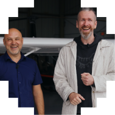
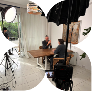
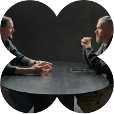
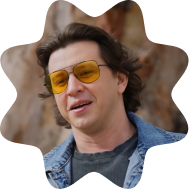
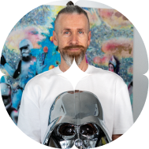
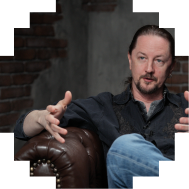

Duration
Long-form video conversation 30–60 min
Show
A YouTube podcast where founders have real conversations about what AI is actually changing in the way we build, hire, invest, and lead companies
Duration
Long-form video conversation 30–60 min
Guest profile
Founders, operators, early-stage investors
Topics
Founder's stories, AI transformation in business and creativity
Publishing
YouTube / Podcast platforms
(01)
Every conversation, straight from the channel






If you're a founder building something real in the AI era, I'd love to have an honest conversation on camera.
Suggest yourself as a guest